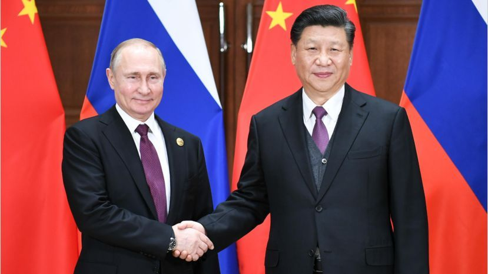
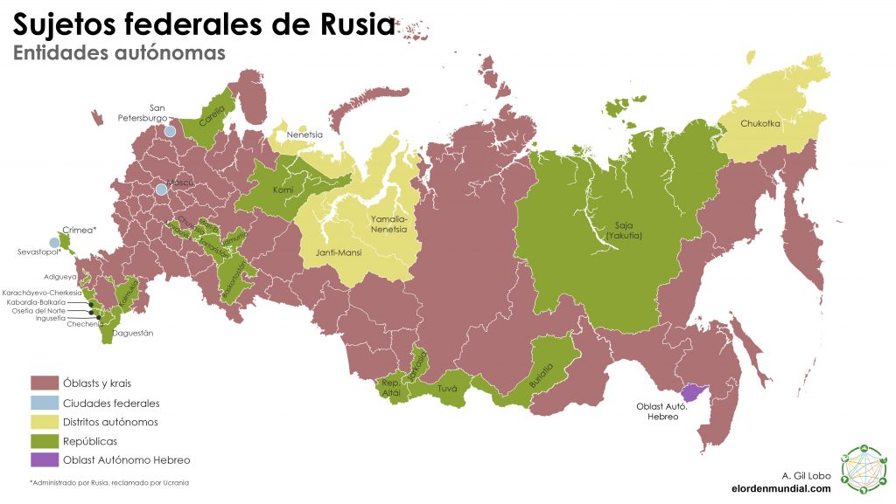

Según la Constitución, que fue adoptada en referéndum nacional el 12 de diciembre de 1993 después de la crisis constitucional rusa de 1993, Rusia es una federación y
una república semipresidencialista, donde el presidente es el jefe de Estado y el presidente del Gobierno (primer ministro) es el jefe de Gobierno.
La Federación Rusa está constituida como una democracia representativa. El poder ejecutivo se ejerce por el gobierno. El poder legislativo es responsabilidad de
las dos cámaras de la Asamblea Federal. El gobierno se regula por un sistema de controles y balances definidos por la Constitución de la Federación Rusa, la ley
fundamental del país y el contrato social para el pueblo de la Federación Rusa. Según la Constitución, la justicia constitucional en la corte se basa en la
igualdad de todos los ciudadanos, los jueces son independientes y solo se someten a la ley, los juicios son abiertos y al acusado se le garantiza la defensa.
Desde 1996, Rusia ha establecido una moratoria sobre la aplicación de la pena capital, aunque esta no ha sido abolida por ley.
El presidente se elige por votación popular para un mandato de seis años (desde las modificaciones constitucionales de 2008; actual mandato es de cuatro años)
con la opción de ser elegido para un segundo mandato consecutivo (no hay restricción sobre el número total de veces que la misma persona puede ser elegida).
Los ministerios del gobierno están compuestos por el presidente del Gobierno (primer ministro) y sus viceprimer ministros, ministros y otros individuos; todos
son designados por el presidente por recomendación del primer ministro con requerimiento del consentimiento de la Duma Estatal. El legislativo es la Asamblea Federal
consistente de dos cámaras; la Duma Estatal con 450 diputados y el Consejo de la Federación con 178 representantes. Los principales partidos, los únicos representados
en la Duma Estatal, son Rusia Unida, el Partido Comunista de la Federación Rusa, el Partido Liberal Democrático de Rusia y Rusia Justa.

La Federación Rusa consiste en un gran número de subdivisiones políticas diferentes, haciendo un total de 85 componentes constituyentes (sujetos federales).
Hay 21 o 22 repúblicas dentro de la federación (la cantidad depende de cómo se reconozca a Crimea; aunque la mayoría de países del mundo le considera como una
república autónoma dentro de Ucrania, en la actualidad se encuentra bajo soberanía absoluta de Rusia y donde la gran mayoría de su población es descendientes rusos,
al igual que su idioma. Razón bajo la cual en el plebiscito de pertenencia, ganó ampliamente su anexión a Rusia), que disfrutan de un alto grado de autonomía sobre
la mayor parte de cuestiones internas y estas corresponden a algunas minorías étnicas propias de Rusia (aunque no siempre sean mayoritarias en ese territorio).
Cada república tiene su propia constitución.
El territorio restante consiste en 9 krais (territorios), 46 regiones conocidas en ruso como óblasts, 4 distritos autónomos y una región autónoma
(Región Autónoma Judía). Aparte de esto, hay dos o tres ciudades federales, Moscú, San Petersburgo y Sebastopol (el último es una soberanía disputada;
la mayoría de países del mundo le considera como una ciudad con estatus especial en Ucrania, debido a la misma situación que afrontó la república de Crimea).
Los gobernadores de los sujetos federales son elegidos mediante sufragio directo (sistema presidencial o semi-presidencial) o, si así lo decide el sujeto federal,
por medio de su parlamento (sistema parlamentario).
En el año 2000 fueron creados los distritos federales, que actualmente son ocho. Cada uno agrupa a los varios sujetos federales anteriormente descrito,
con la finalidad de administrar y gestionar de mejor manera, las competencias del gobierno federal a lo largo de todo el país.
Cada distrito federal esta dirigido por un Representante plenipotenciario del presidente de la Federación de Rusia para velar el cumplimiento de
las acciones federales en cada uno de los sujetos federales del distrito federal a su cargo.